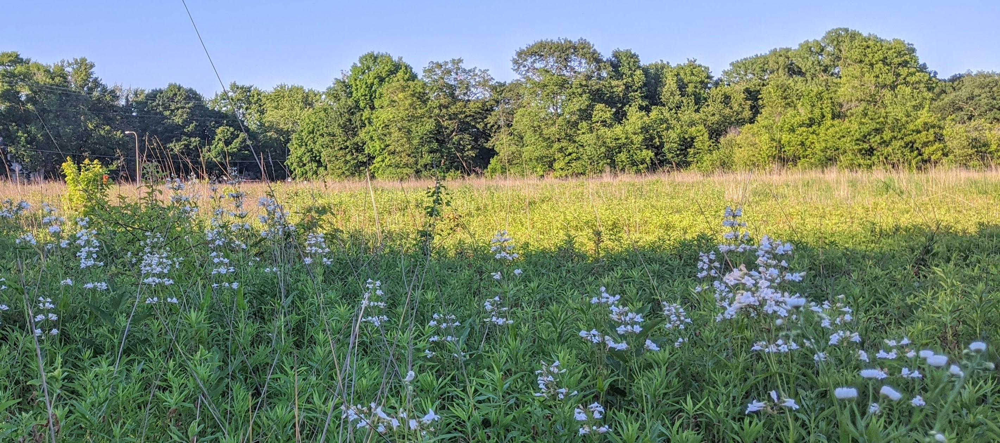

I am an evolutionary ecologist broadly interested in understanding the evolution of host-microbe symbioses. My work aims to integrate the molecular processes that underlie these host-microbe interactions with fundamental ecological and evolutionary theory in order to understand the outcome of these interactions.
I am currently an Arts & Science Postdoctoral Fellow with Megan Frederickson in the Department of Ecology and Evolutionary Biology at the University of Toronto and I completed my PhD with Anthony Yannarell at the University of Illinois.
See here for my CV.